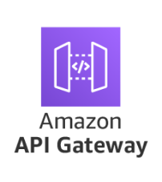
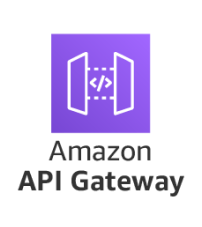
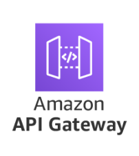

For my website project, I’m focusing on building a continuous glucose monitor (CGM) display system for my son, who has type 1 diabetes. This project aims to show his glucose levels on a dedicated LED screen, offering a visible, convenient way to monitor his health. With a static HTML page documenting the process, this site will serve as both a project log and an informational resource on using CGM data outside of traditional mobile applications. By taking real-time data from his CGM, the display will allow me to track his glucose levels constantly without the hassle of repeatedly opening my phone, which is both time-consuming and inconvenient during busy or urgent situations.
This approach has significant benefits, particularly in terms of visibility and accessibility. A wall-mounted or shelf-placed LED display can be situated in key areas like the kitchen or living room, where the family spends most of their time, ensuring that his glucose levels are always within sight. Such visibility can lead to faster reactions in case of sudden fluctuations, helping us act promptly if his levels drift out of range. This method also removes some of the limitations of mobile apps, which can be cumbersome and may cause slight delays when checking his levels frequently, especially during activities or in the middle of the night.
The project also addresses the broader issue of accessibility in diabetes monitoring. While mobile devices are highly advanced, they are sometimes limiting in situations that require immediate or constant access to health information. A dedicated CGM monitor adds a new layer of assurance for our family, making his health data part of our home environment. Additionally, sharing this project on a website can benefit other families facing similar challenges by offering a simple yet effective solution to make CGM monitoring more convenient and accessible at home.

In the project section of my website, I’ll document the technical journey of creating a continuous glucose monitor (CGM) display system for my son. This setup will make it easy to view his glucose levels at all times via an LED RGB screen mounted at home, powered by AWS services, a Raspberry Pi microcontroller, and the Dexcom API. The goal is to seamlessly integrate these technologies to continuously pull glucose data from Dexcom’s CGM system, send it through the cloud, and display it in real-time on a dedicated LED screen.
The process will start with the Dexcom API, which provides access to glucose readings in real time. Using AWS Lambda functions, I’ll create an automated process to query the Dexcom API at regular intervals and fetch the latest glucose readings. Lambda’s serverless nature makes it ideal for this project, as it can handle the periodic tasks of fetching and processing data without needing a dedicated server. Once Lambda has pulled the data, it will pass it to an API Gateway that securely routes this data to my home setup. This architecture ensures that my son’s glucose levels are processed efficiently and transmitted without any lag to our home monitoring device.
The display system at home will be powered by a Raspberry Pi microcontroller connected to an LED RGB screen. The Raspberry Pi will be programmed to listen to the data feed from the AWS API Gateway, receive the glucose data, and display it on the screen in an easy-to-read format. This setup allows for the creation of custom alerts as well; for instance, the LED screen could change colors if his glucose levels go too high or too low, making it instantly noticeable. By using the flexibility of AWS and the power of the Dexcom API, this project will result in a real-time, accessible solution to track my son’s glucose levels conveniently and reliably, helping us manage his condition more effectively.